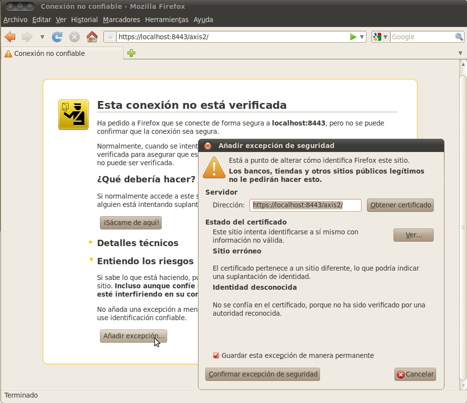

Seguridad a nivel de transporte con Rampart
Configuración de Tomcat
Para configurar SSL en Apache-Tomcat, apagamos el servidor y editamos el archivo apache-tomcat-6.0.26/conf/server.xml y descomentamos o añadimos el siguiente tag de configuración:
<Connector port="8443" protocol="HTTP/1.1" SSLEnabled="true"
maxThreads="150" scheme="https" secure="true"
clientAuth="false" sslProtocol="TLS"
minSpareThreads="25" maxSpareThreads="75"
enableLookups="false"
keystoreFile="/home/servicios/claves/tomcat.keystore"
keystorePass="tomcat-kspass"
acceptCount="100" />
En él estamos indicando cuál es el almacén de certificados, y con qué contraseña se puede abrir, para que Tomcat pueda establecer conexiones SSL con otras máquinas (clientes). Para crear el almacén utilizamos la herramienta keytool que se distribuye con el JDK:
servicios@servicios:~/claves$ $JAVA_HOME/bin/keytool -genkey -alias tomcat
-keyalg RSA -keystore ./tomcat.keystore
Ponemos la misma password (tomcat-kspass) tanto para el almacén como para el certificado.
El puerto será el estándar para las conexiones https: el 8443. Guardamos el archivo e iniciamos Tomcat. Nuestro navegador debería permitirnos establecer conexión segura en la URL https://localhost:8443, así como en https://localhost:8443/axis2/. La primera vez que accedamos con determinado navegador a localhost de forma segura, se nos mostrará una advertencia de seguridad.

Esto es debido a que nuestro certificado no va firmado por una autoridad certificadora. Añadimos la excepción para nuestro certificado en localhost y ya podemos usar la conexión de forma segura.
Servicio con SSL
Aunque vamos a crear un servicio básico, que sólo tenga seguridad de nivel de transporte, empezaremos copiando el proyecto Axis2SWSeguroServidor como Axis2SWSSLServidor, para aprovechar las dependencias, que vamos a dejar igual. Sólo es necesario que cambiemos el ID de la aplicación en el pom.xml, para que no se confunda con otra en Axis2.
Vamos a volver a generar el código porque vamos a cambiar el WSDL, así que eliminamos el paquete es.ua.jtech.seguro, y la carpeta META-INF de los resources. Editamos el Seguro.wsdl y sustituimos toda la Policy por la siguiente:
<wsp:Policy wsu:Id="p1"> <wsp:ExactlyOne> <wsp:All> <sp:TransportBinding xmlns:sp="http://schemas.xmlsoap.org/ws/2005/07/securitypolicy"> <wsp:Policy> <sp:TransportToken> <wsp:Policy> <sp:HttpsToken RequireClientCertificate="false"/> </wsp:Policy> </sp:TransportToken> <sp:AlgorithmSuite> <wsp:Policy> <sp:Basic256/> </wsp:Policy> </sp:AlgorithmSuite> <sp:Layout> <wsp:Policy> <sp:Lax/> </wsp:Policy> </sp:Layout> <sp:IncludeTimestamp/> </wsp:Policy> </sp:TransportBinding> <sp:SignedSupportingTokens xmlns:sp="http://schemas.xmlsoap.org/ws/2005/07/securitypolicy"> <wsp:Policy> <sp:UsernameToken sp:IncludeToken="http://schemas.xmlsoap.org/ ws/2005/07/securitypolicy/IncludeToken/AlwaysToRecipient" /> </wsp:Policy> </sp:SignedSupportingTokens> </wsp:All> </wsp:ExactlyOne> </wsp:Policy>
También reemplazamos todas las ocurrencias de "Seguro" por "SegTransporte" en nuestro WSDL. Guardamos el WSDL y le cambiamos el nombre a SegTranporte.wsdl y generamos el código (cambiando también el nombre en el GeneraCodigo.java), refrescando a continuación. Eliminamos el archivo es.ua.jtech.seguro.SeguroSkeleton.java que se ha generado, ya que tenemos el nuestro propio en el subpaquete custom. Arreglamos el error que se genera, cambiando el nombre (con el Refactor) de la clase SeguroSkeleton a SegTransporteSkeleton y añadiendo el import correspondiente en SegTransporteMessageRecieverInOut.java, y el código queda compilable sin errores. También podemos eliminar el manejador de contraseñas, que no se va a utilizar en este ejemplo sencillo. (Recuérdese que la contraseña enviada como información de login se comprueba en el Skeleton del servicio).
También se ha generado la carpeta META-INF con el archivo services.xml, el cuál editamos para configurar Rampart. Añadimos la etiqueta <module ref="rampart"> y pegamos la política de seguridad, la misma que tenemos en el WSDL. Debemos especificar en ella los espacios de nombres, ya que en services.xml no están especificados:
<serviceGroup> <service name="SegTransporte"> [...] <module ref="rampart" /> <wsp:Policy xmlns:wsp="http://schemas.xmlsoap.org/ws/2004/09/policy" xmlns:sp="http://schemas.xmlsoap.org/ws/2005/07/securitypolicy" xmlns:wsu="http://docs.oasis-open.org/wss/2004/01/ oasis-200401-wss-wssecurity-utility-1.0.xsd" wsu:Id="p1"> <wsp:ExactlyOne> <wsp:All> [...] </wsp:All> </wsp:ExactlyOne> </wsp:Policy> </service> </serviceGroup>
Una vez efectuados todos estos cambios, podemos ejecutar el proyecto como Maven package, y copiar el .jar generado en la carpeta de servicios de Axis2:
/opt/apache-tomcat-6.0.26/webapps/axis2/WEB-INF/services/
A los pocos segundos aparecerá publicado el servicio, si refrescamos la página de Axis2. Podremos descargarnos su WSDL por conexión segura si accedemos a:
Cliente con SSL
Ahora tenemos que configurar un cliente del servicio web que sea capaz de conectarse por SSL. Para aprovechar las dependencias y el WSDL vamos a copiar el anterior proyecto, el Axis2SWSSLServidor y lo vamos a pegar como Axis2SWSSLCliente. Eliminamos la carpeta META-INF que ya no hará falta, y el paquete es.ua.jtech.segtransporte, que volveremos a generar. También podemos eliminar SegTransporteSkeleton.java, que pertenece al servidor. Para generar el código de cliente, editamos el GeneraCodigo.java y cambiamos la llamada por:
WSDL2Code.main(new String[]{"-uw",
"-S", "src/main/java",
"-uri", "src/main/resources/SegTransporte.wsdl"});
Lo ejecutamos y refrescamos. Ahora sólo falta crear el cliente para configurar la conexión segura. Podemos copiar el Cliente.java del proyecto Axis2SWSeguroCliente y modificarlo. Cliente.java debe quedar así:
package es.ua.jtech.seguro.custom;
import java.io.FileNotFoundException;
import java.rmi.RemoteException;
import es.ua.jtech.segtransporte.SegTransporteStub;
import javax.xml.stream.XMLStreamException;
import org.apache.axis2.context.ConfigurationContext;
import org.apache.axis2.context.ConfigurationContextFactory;
import org.apache.neethi.Policy;
import org.apache.rampart.policy.model.RampartConfig;
public class Cliente {
public static void main(String[] args)
throws FileNotFoundException, XMLStreamException, RemoteException {
ConfigurationContext context = ConfigurationContextFactory.
createConfigurationContextFromFileSystem("repository");
SegTransporteStub stub = new SegTransporteStub(context,
"https://localhost:8443/axis2/services/SegTransporte");
stub._getServiceClient().engageModule("rampart");
Policy rampartConfig = new Policy();
rampartConfig.addPolicyComponent(new RampartConfig());
stub._getServiceClient().getAxisService().getPolicySubject().
attachPolicy(rampartConfig);
stub._getServiceClient().getOptions().setPassword("boyan-pass");
stub._getServiceClient().getOptions().setUserName("boyan");
System.setProperty("javax.net.ssl.trustStore",
"/home/servicios/claves/tomcat.keystore");
System.setProperty("javax.net.ssl.trustStorePassword", "tomcat-kspass");
System.out.println(stub.saluda("Boyan","Bonev"));
}
}
El cliente genera la configuración de rampart usando el repositorio local que debe contener los módulos de rampart. O bien creamos la carpeta repository/modules con los archivos rahas-1.5.mar y rampart-1.5.mar dentro, o bien la copiamos desde la raiz del proyecto cliente Axis2SWSeguroCliente.
El cliente está listo para ejecutarlo y comprobar que se conecta de forma segura con el servidor de Axis2 integrado en Apache-Tomcat.